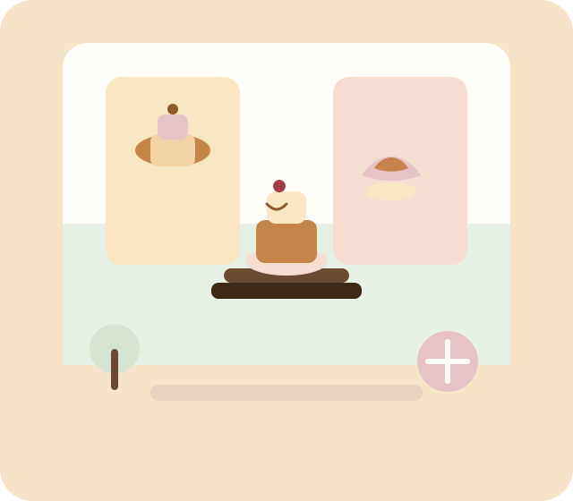

Neighbourhood bakery
Freshly baked warmth, made by hand.
Oppulance Backery bakes small batches of cakes, bread, and pastries each morning. The recipes stay simple, the ingredients stay fresh, and the welcome stays genuine.
- Baked fresh daily
- Small batches
- Careful ingredients
